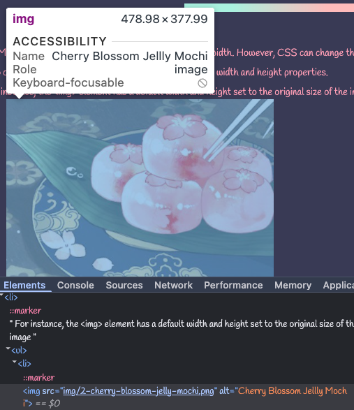
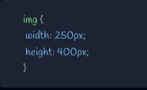
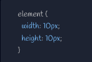
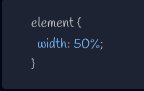

HTML elements have a default size, including height and width. However, CSS can change their size.
Two of the most common sizing properties in CSS are the width and height properties.
For instance, the <img> element has a default width and height set to the original size of the image

The above rendered image of Cherry Blossom Jelly Mochi is 478.98 pixels-wide and 377.99 pixels-tall by default. But this can be changed in CSS by selecting the image and setting a differnet width and height

This is image would become taller than it is wide.
# Absolute vs. Relative Units
The kind of measurements given to an element'ss properties cna be splint into two groups: absolute units and relative units.
Absolute units are usually expressed as numbers, with or without a decimal. They are fixed and do not change in size according to the size of its direct parent element.
Pixels(px) are the most commonly used:

Other common options include points (pt) and centimeters (cm)
Keep in mind that when setting the height of a given element with absolute units, because it may cause the content to overflow outside the boundaries of its parent element.
If an element's property is set with relative units, it will change if the size of something else changes, like its parent element or the computer screen itself.
This is often expressed as percentages (i.e. 50%):

There are other frequently-used relative units:
em measurements that are associated with the font size of either the parent element when applying font-size or the element itself when setting the width.
rem measurements that are associated with the font-size of the root <html> element (16pt by default)
Uses for the em may include setting a page's text to change according to how a usesr sets the text size for their browser. For rem, this could be used to set the baseline text size for a site.